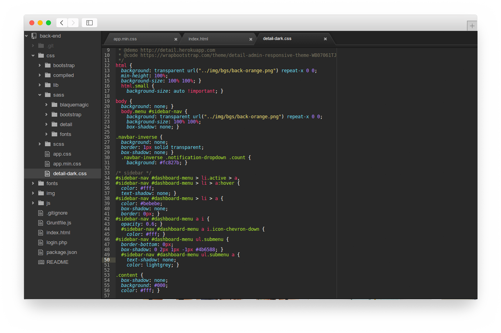
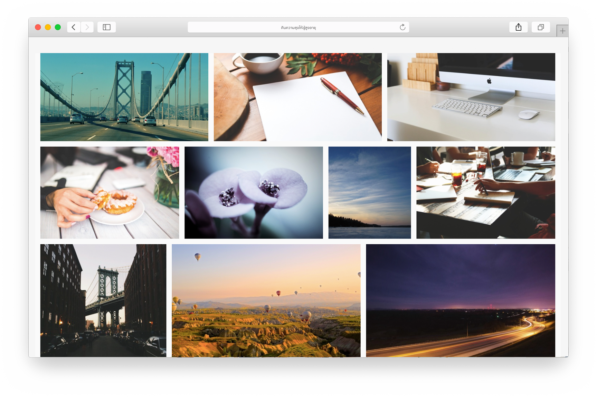
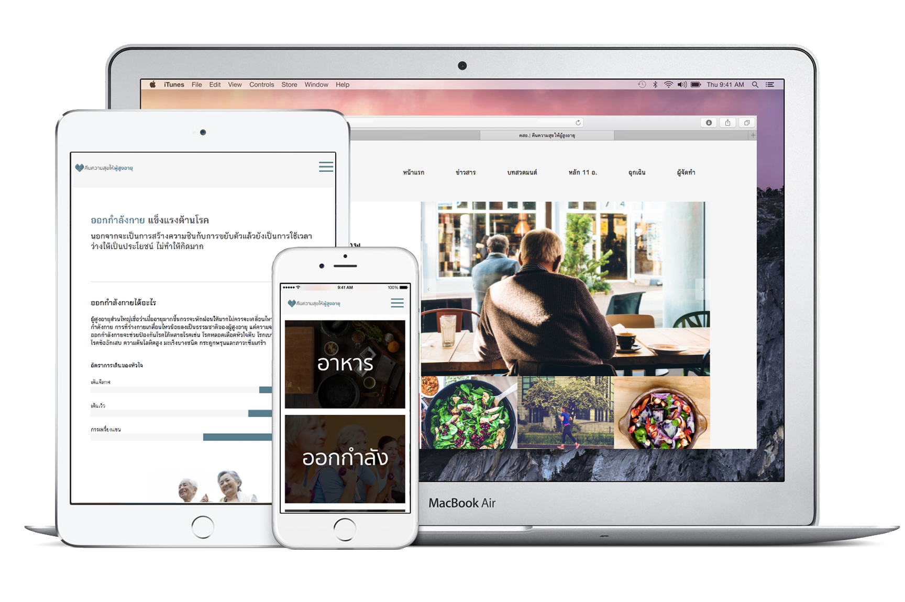
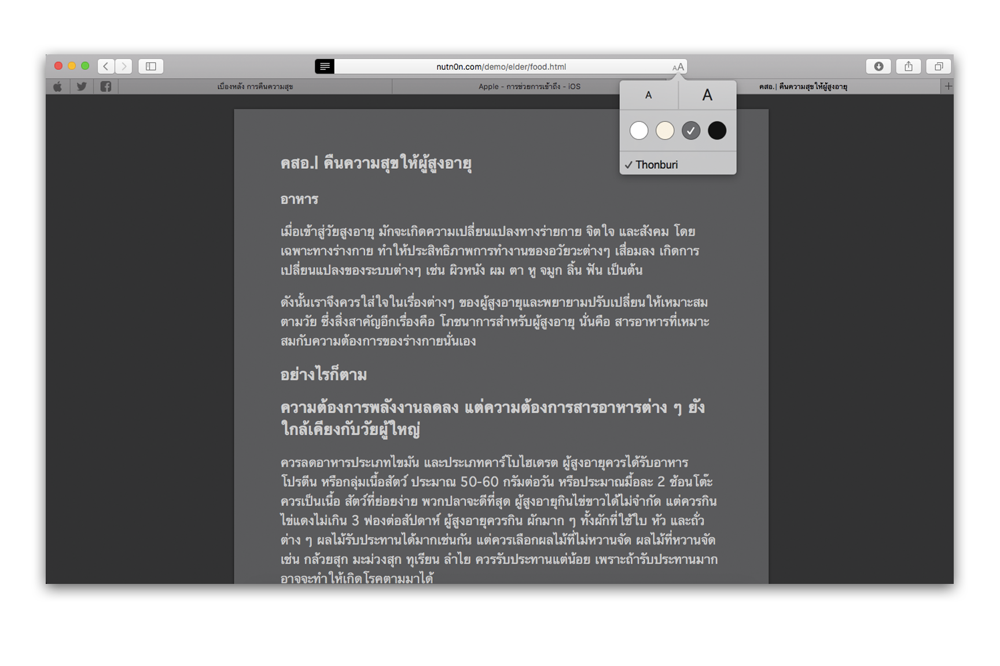

ความเรียบง่าย
เราออกแบบเว็บโดยเน้นโฟกัสที่เนื้อหาเป็นสำคัญ เราไม่ชอบการนำสิ่งที่ไม่มีความหมายใส่เข้ามาเพื่อให้เกิดความรก การที่โฟกัสที่เนื้อหาผู้อ่านจะเกิดความเพลิดเพลินและได้รับสาระมากที่สุด โดยมีหน้าตาของเว็บที่สวยงามนำทางไป

พัฒนาด้วยเทคโนโลยีล่าสุด
เราเลือกใช้เทคโนโลยีล่าสุดอย่าง HTML5 , CSS3 และ javascript ในการพัฒนา เพื่อให้รองรับกับอุปกรณ์ทั้งสมัยใหม่และที่เก่ากว่า และแน่ใจว่าผู่อ่านจะสามารถใช้อุปกรณ์ของตนเองให้เกิดประโยชน์ได้ถึงที่สุด

ลิขสิทธิ์เป็นเรื่องสำคัญ
ทั้ง ซอร์สโค้ด ซอฟแวร์ และ รูปภาพต่างๆ ได้มาอย่างถูกต้อง โดยเฉพาะรูปภาพที่เราเลือกใช้รูปคุณภาพจาก Pexels แหล่งรวมรูปภาพฟรี จากศิลปินทั่วโลกที่เปิดโอกาสให้เรานำมาใช้งานได้

อ่านได้บนทุกอุปกรณ์
เราใช้เทคโนโลยีที่เรียกว่า การออกแบบที่ตอบสนอง เพื่อให้ผู้ใช้งานเพลิดเพลินไปกับการใช้งานบนทุกอุปกรณ์ทุกขนาด ตั้งแต่โทรศัพท์ที่หน้าจอเล็กที่สุด ไปจนถึงอุปกรณ์หน้าจอขนาดใหญ่อย่างคอมพิวเตอร์ตั้งโต๊ะ

ตัวช่วยการเข้าถึง
เรารองรับ ตัวอ่านหน้าเว็บของ Safari บนอุปกรณ์ iOS และ Mac ที่ช่วยดึงโฆษณา ปุ่ม และแถบนำทางออกซึ่งจะช่วยให้คุณสามารถจดจ่ออยู่แต่กับ คอนเทนต์ที่คุณต้องการเท่านั้น นอกจากนี้ ตัวอ่านหน้าเว็บของ Safari ยังสามารถทำงานร่วมกับคุณสมบัติ VoiceOver ที่จะช่วยให้คุณได้ยินเกี่ยวกับสิ่งที่คุณกำลังดูอยู่ได้
เข้าสู่หน้าเว็บ
ภูมิใจนำเสนอโดย @Nutn0n